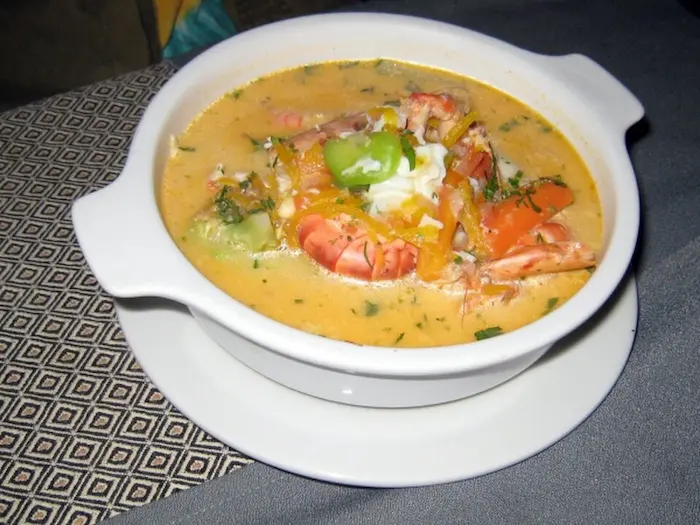

Traditional Foods of Guayaquil
Discover some of the most popular traditional foods from Guayaquil and Ecuador's coastal region. Learn about local flavors, ingredients, and culinary traditions.

Traditional Foods of GuayaquilDiscover some of the most popular traditional foods from Guayaquil and Ecuador's coastal region. Learn about local flavors, ingredients, and culinary traditions.